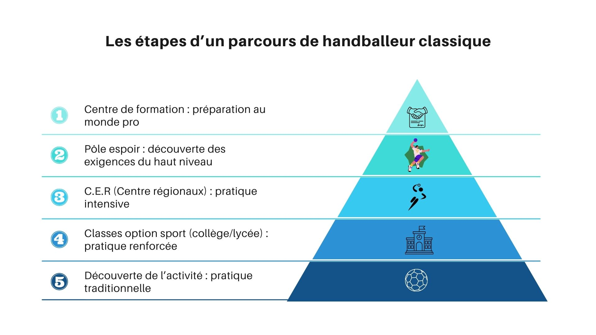

Centres de formation : quelles sont ces structures, comment sont-elles constituées, comment y parvenir ?
Pour de nombreux joueurs de handball rêvant du plus haut niveau, les centres de formation (CF) représentent leur seul moyen d'y parvenir. Mais quelles sont ces structures, comment sont-elles constituées et comment y parvenir ?